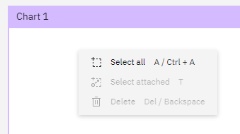

Commands in the i2 Notebook web client
In the i2 Notebook web client, commands enable users to interact directly with your plug-ins. They can provide standalone functionality, such as sending data to an external API; or they can provide a way to open and close a tool view.
In the plug-in entry point, you can create commands, choose where those commands are surfaced to the user as actions, and decide when those actions are to be enabled. To see worked examples of creating, surfacing, and removing multiple commands, see the tutorials.
Surfacing commands
You can surface commands in two areas of the i2 Notebook web client user interface:
The application ribbon, on the Home tab or a custom tab.

The chart's pop-up menu.

Your plug-ins can surface or remove any available commands; not only the ones that you create. If you want to, you can arrange for your plug-in to surface commands from the ribbon in the pop-up menu.
Positioning commands
When you surface a command in a particular area, you can choose to position the resulting action relative to the other contents of that area. You can surface commands within existing groups, and create your own groups too.
Removing commands
As well as surfacing commands, you might also want to remove commands from the i2 Notebook web client's user interface, based on the user, the state of your plug-in, or something else. You can remove an action from a particular area of the application, or you can remove a command globally from all areas of the application.
For more information about the facilities for interacting with commands, see the API documentation.